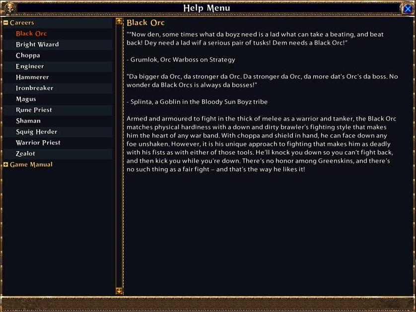

This is a step by step guide to creating the listbox of your dreams.

| Expandable List Box | This is a step by step guide to creating the listbox of your dreams. |
| The concept | We already know how to make a standard listbox. |
| Disclaimer | The expandable listbox in HelpWindow will be our main example and reference for this tutorial and I’ll be ruthlessly copying and pasting its code into this page. |
| Pre-requisites | For this specific example of an expandable list box we will need a function that returns the data we want to show in our listbox. |
| Rearranging the data | This is the main algorithm behind the expandable list box. |
| Clicking on entries | Here we will see how the system reacts to user clicks on the list. |
| Note | The picture used at the top of the page has different alternating background colors for each entry in the list. |
We already know how to make a standard listbox. The functionality to implement one is readily available in the ListBox structure. What we want to achieve with an extendable listbox is the possibility of organizing our listbox in separate categories/sections that we can collapse and expand at will. In order to achieve this goal we need to organize our data in a specific manner and then use that data.
The expandable listbox in HelpWindow will be our main example and reference for this tutorial and I’ll be ruthlessly copying and pasting its code into this page.
For this specific example of an expandable list box we will need a function that returns the data we want to show in our listbox. In HelpWindow we use a function called HelpWindowGetTopicList which we use in the following way.
HelpWindow.data = HelpWindowGetTopicList()
where HelpWindow.data is initialized as a global variable at the beginning of the lua file with a.
HelpWindow.data = {}We will also need another couple of variables/tables whose purpose will be explained later.
HelpWindow.listBoxData = {}
HelpWindow.rowToEntryMap = {}
numTotalRows = 0
lastPressedButtonId = 0In the case of the HelpWindow data, we send to LUA the following information.
HelpWindow.data[1-n] // table containing the sub-sections of our listbox
HelpWindow.data[1-n].id // section's id
HelpWindow.data[1-n].name // section's name
HelpWindow.data[1-n].expanded // is the section expanded? C code passes it false by default
HelpWindow.data[1-n].entries[1-n] // table containing the individual entries inside the subsections
HelpWindow.data[1-n].entries[1-n].id // entry's id
HelpWindow.data[1-n].entries[1-n].name // entry's name
HelpWindow.data[1-n].entries[1-n].subSection // entry's subSection number
This is the main algorithm behind the expandable list box. What it does is take this originally two-level structure and convert it into a single-level structure, containing only what is currently visible in the listbox, and not the entirety of HelpWindow.data. The following is the code used in HelpWindow to make this possible. I will break it down step by step right after.
function HelpWindow.PrepareData()
orderTable = {}
HelpWindow.listBoxData = {}
numTotalRows = 1
HelpWindow.rowToEntryMap = {}
if( not HelpWindow.data ) then return end
table.sort( HelpWindow.data, DataUtils.AlphabetizeByNames )
for sectionIndex, sectionData in ipairs( HelpWindow.data ) do
if( sectionData.expanded == false ) then
WindowSetShowing( "HelpWindowPlayerListRow"..numTotalRows.."MinusButton", false )
WindowSetShowing( "HelpWindowPlayerListRow"..numTotalRows.."PlusButton", true )
else
WindowSetShowing( "HelpWindowPlayerListRow"..numTotalRows.."MinusButton", true )
WindowSetShowing( "HelpWindowPlayerListRow"..numTotalRows.."PlusButton", false )
end
ButtonSetTextColor("HelpWindowPlayerListRow"..numTotalRows.."Name",Button.ButtonState.NORMAL, 255, 204, 102)
table.sort( sectionData.entries, DataUtils.AlphabetizeByNames )
local sectionTable = {name = sectionData.name, isSection = true, id = sectionData.id}
table.insert( HelpWindow.listBoxData, numTotalRows, sectionTable )
table.insert( orderTable, numTotalRows )
local indexStruct = {index = sectionIndex, isSection = true}
table.insert( HelpWindow.rowToEntryMap, numTotalRows, indexStruct )
numTotalRows = numTotalRows + 1
if( sectionData.expanded == true ) then
for entryIndex, entryData in ipairs( sectionData.entries ) do
WindowSetShowing( "HelpWindowPlayerListRow"..numTotalRows.."MinusButton", false )
WindowSetShowing( "HelpWindowPlayerListRow"..numTotalRows.."PlusButton", false )
ButtonSetTextColor("HelpWindowPlayerListRow"..numTotalRows.."Name",Button.ButtonState.NORMAL, 255, 255, 255)
local entryTable = {name = L" "..entryData.name, isSection = false, id = entryData.id}
table.insert( HelpWindow.listBoxData, numTotalRows, entryTable )
table.insert(orderTable, numTotalRows)
local indexStruct = {categoryIndex = sectionIndex, index = entryIndex, isSection = false}
table.insert( HelpWindow.rowToEntryMap, numTotalRows, indexStruct )
numTotalRows = numTotalRows + 1
end
end
end
ListBoxSetDisplayOrder("HelpWindowPlayerList", orderTable )
HelpWindow.ResetAllButtons()
end
To begin with we start with.
orderTable = {}
HelpWindow.listBoxData = {}
numTotalRows = 1
HelpWindow.rowToEntryMap = {}We declare an order table, which is used by the ListBox implementation to decide which members of a table should be displayed, and in which order. Then we empty our HelpWindow.listBoxData and HelpWindow.rowToEntryMap and set the number of total visible rows to 1. It is in reality both an index and a counter, and is frequently throughout this function.
In the next step we check if we have any data to work on. If we don’t, exit the function because we cannot do anything at this stage.
if( not HelpWindow.data ) then return end
Next we sort the categories (sections) alphabetically. This can be changed or avoided depending on the needs of the window.
table.sort( HelpWindow.data, DataUtils.AlphabetizeByNames )
In the next step we iterate once per section by using the ipairs operator. The very important assumption here is that the table arrives from C in a sequentially indexed manner. If this is not guaranteed, ipairs will interrupt the loop before every element in the table could be accessed.
for sectionIndex, sectionData in ipairs( HelpWindow.data ) do
Next, we want to make sure that if the section is expanded, we can see a “minus” button next to its name, and a plus sign in the opposite case.
if( sectionData.expanded == false ) then
WindowSetShowing( "HelpWindowPlayerListRow"..numTotalRows.."MinusButton", false )
WindowSetShowing( "HelpWindowPlayerListRow"..numTotalRows.."PlusButton", true )
else
WindowSetShowing( "HelpWindowPlayerListRow"..numTotalRows.."MinusButton", true )
WindowSetShowing( "HelpWindowPlayerListRow"..numTotalRows.."PlusButton", false )
end
Next, we color the name of categories yellow to differentiate them from the individual entries.
ButtonSetTextColor("HelpWindowPlayerListRow"..numTotalRows.."Name",Button.ButtonState.NORMAL, 255, 204, 102)Next, we sort the individual entries inside of this section.
table.sort( sectionData.entries, DataUtils.AlphabetizeByNames )
Next, we create a LUA table with a C-struct-like purpose. We want to be able to pass both name, isSection and id to HelpWindow.listBoxData, and we want to push that table in the next cell of the table so that we have.
HelpWindow.listBoxData[1-n].name
HelpWindow.listBoxData[1-n].isSection
HelpWindow.listBoxData[1-n].id
Where 1-n in our case is determined by numTotalRows, which is done through.
local sectionTable = {name = sectionData.name, isSection = true, id = sectionData.id}
table.insert( HelpWindow.listBoxData, numTotalRows, sectionTable )
table.insert( orderTable, numTotalRows )The last line adds the current element to the list of elements to be displayed in the listbox.
Next, we add the number of the section to the rowToEntryMap. This map will later allow us to use a row number to derive which component in HelpWindow.data we are referring to.
local indexStruct = {index = sectionIndex, isSection = true}
table.insert( HelpWindow.rowToEntryMap, numTotalRows, indexStruct )and then we increment the counter (because we have just added an extra row to the visible list)
Next, if the section is expanded, and therefore its entries are to be shown in the listbox, we iterate through each one of them.
if( sectionData.expanded == true ) then
for entryIndex, entryData in ipairs( sectionData.entries ) do
We set both the minus and plus buttons to be invisible because we cannot expand nor collapse the individual entries. We also set the entry color to be white.
WindowSetShowing( "HelpWindowPlayerListRow"..numTotalRows.."MinusButton", false )
WindowSetShowing( "HelpWindowPlayerListRow"..numTotalRows.."PlusButton", false )
ButtonSetTextColor("HelpWindowPlayerListRow"..numTotalRows.."Name",Button.ButtonState.NORMAL, 255, 255, 255)
Next we repeat a similar to above addition of tables to our listBoxData and rowToEntryMap tables, but this time we do it once per entry.
local entryTable = {name = L" "..entryData.name, isSection = false, id = entryData.id}
table.insert( HelpWindow.listBoxData, numTotalRows, entryTable )
table.insert(orderTable, numTotalRows)
local indexStruct = {categoryIndex = sectionIndex, index = entryIndex, isSection = false}
table.insert( HelpWindow.rowToEntryMap, numTotalRows, indexStruct )Please note that we add a tab in front of the entry name so that it looks as if it were tabbed in the listbox. Also notice that indexStruct contains not only the index of the category but also the index of the entry of this entry, so we can find it in HelpWindow.data later by using HelpWindow.data[categoryIndex].entries[index].
At the very end we call the following fuctions.
ListBoxSetDisplayOrder("HelpWindowPlayerList", orderTable )
HelpWindow.ResetAllButtons()The first call simply tells the listbox to display entries from HelpWindow.listBoxData in the orderTable order. The second function call executes the following code.
function HelpWindow.ResetAllButtons()
for index, data in ipairs( HelpWindow.listBoxData ) do
if( lastPressedButtonId == data.id and data.isSection == false ) then
ButtonSetPressedFlag("HelpWindowPlayerListRow"..index.."Name", true ) -- set newly selected entry as pressed
else
ButtonSetPressedFlag("HelpWindowPlayerListRow"..index.."Name", false )
end
end
end
Which simply de-presses every button in the listbox that might have been stuck in a pressed position and not been refreshed.
Here we will see how the system reacts to user clicks on the list. The function that responds to the left click on an entry (categories too!) in the list is OnLButtonUpPlayerRow(). All this function does is get the row in the list where the click occurred and passes it onto HelpWindow.DisplayRow(), which can be seen below.
function HelpWindow.DisplayRow( row )
local index = HelpWindow.rowToEntryMap[row].index
if( HelpWindow.rowToEntryMap[row].isSection ) then
if( HelpWindow.data[index].expanded ) then
HelpWindow.data[index].expanded = false
else
HelpWindow.data[index].expanded = true
end
else
HelpWindow.ResetPressedButton()
local categoryIndex = HelpWindow.rowToEntryMap[row].categoryIndex
lastPressedButtonId = HelpWindow.data[categoryIndex].entries[index].id
ButtonSetPressedFlag("HelpWindowPlayerListRow"..row.."Name", true )
HelpWindow.DisplayHelpEntry( HelpWindow.data[categoryIndex].entries[index].id, HelpWindow.data[categoryIndex].entries[index].name )
end
HelpWindow.PrepareData()
end
First of all the function retrieves the categoryIndex from the rowToEntrymap. It then checks to see if the entry we clicked on is a section or an entry. If it is a section, it sets the section to be expanded if it was collapsed before, otherwise it sets it to be collapsed. If the row the player clicked on is found to be an entry then the previously pressed button is unpressed.
HelpWindow.ResetPressedButton()
Next the category index for HelpWindow.data gets obtained from the rowToEntryMap and lastPressedButtonId is set to the newly pressed entry’s id. The same button is then set to be pressed.
local categoryIndex = HelpWindow.rowToEntryMap[row].categoryIndex
lastPressedButtonId = HelpWindow.data[categoryIndex].entries[index].id
ButtonSetPressedFlag("HelpWindowPlayerListRow"..row.."Name", true )
we then call DisplayHelpEntry which we pass the id and the name to. In the case of the HelpWindow all it does is set the main window’s name equal to the passed in name and then uses the passed id to find the actual entry text for that window. In your case the function could be doing anything else you want.
At the very end we do a call to HelpWindow.PrepareData() to make sure that the changes to our click are reflected on the listbox.
The picture used at the top of the page has different alternating background colors for each entry in the list. The code for that was not provided above. Here it is, in case you wanted to add that to your own menu. The call to this function should be placed at the end of PrepareData().
function HelpWindow.SetListRowTints()
for row = 1, numTotalRows do
local row_mod = math.mod(row, 2)
color = DataUtils.GetAlternatingRowColor( row_mod )
local targetRowWindow = "HelpWindowPlayerListRow"..row
WindowSetTintColor(targetRowWindow.."RowBackground", color.r, color.g, color.b )
end
end